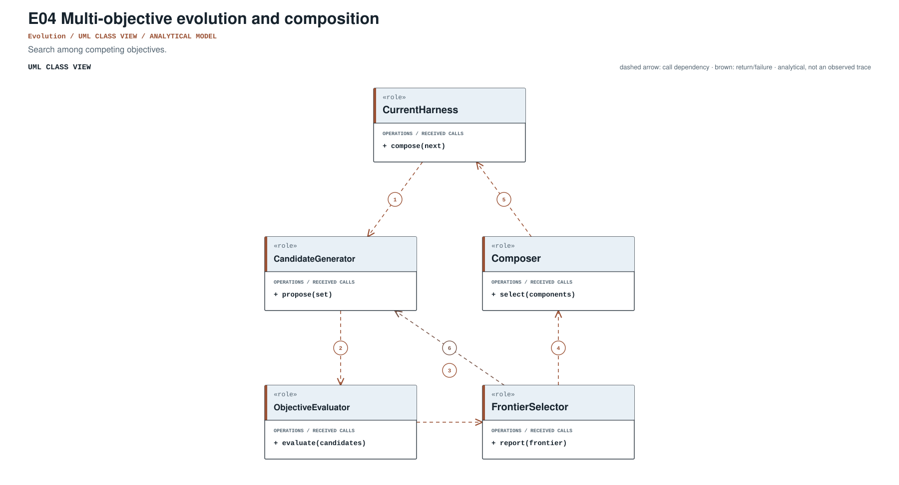
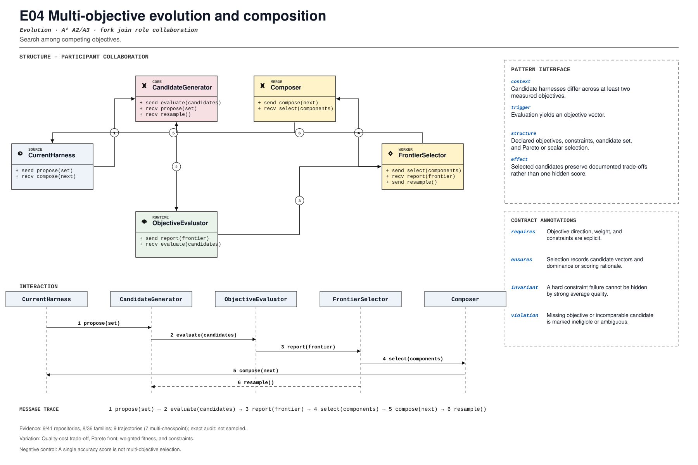

PROMPT SKETCH
State objective direction, weights, and constraints before evaluating candidates. Record the candidate vectors and the dominance or scoring rationale behind the selection.Search among competing objectives.
candidate_harness_selectionRECORD STATUSCandidate · v0.1.0The proposed contract drawn as participant roles, received calls, and numbered dependencies.

The same roles and calls as a class collaboration and a numbered message sequence.

Where the mechanism applies. All four dimensions belong to the proposed match, not just its vocabulary.
The obligation that clients, operators, and auditors should be able to rely on.
A single accuracy score is not multi-objective selection.
The hot spot is admitted only where the protected semantics survive.
Quality-cost trade-off, Pareto front, weighted fitness, and constraints.
Test dominance, ties, constraint failure, missing objective, and composition.
Did harness optimization expose more objectives and constraints?
An illustrative prompt and a small design sketch for the proposed contract. Names and APIs are invented; this is not a repository excerpt.
State objective direction, weights, and constraints before evaluating candidates. Record the candidate vectors and the dominance or scoring rationale behind the selection.def select(candidates, objectives):
scored = [objectives.score(candidate) for candidate in candidates]
frontier = pareto_front(scored)
chosen = objectives.tie_break(frontier)
return Selection(
chosen,
vectors=[item.vector for item in scored],
frontier=[item.id for item in frontier],
)Illustrative design sketch. A Pareto front explains trade-offs; a single unlabeled score hides them. This example is a teaching aid, not implementation evidence or a conformance claim.
The frozen rule that retrieves this record, the canonical source exemplar, and the control that should stay unmatched.
candidate_harness_selection(?i)\b(?:multi[_-]?objective|pareto|fitness[_-]?function|objective[_-]?weights?)\bFrozen expression, v0.1.0. A match is a retrieval cue, not a confirmed implementation.HarnessForge_4B/tools/half_select_harnesses.py:108Support: HarnessForge_4B/registries/README.md:48Scope-anchored review. pohe-agent analyze <repo> --pattern E04 anchors the cue to its enclosing declaration and checks a separate operational signature for all four pointcut dimensions. Missing roles and negative-control risks remain visible; a structural match is not E2/E3. Calibration report ↗
Up to five public files retrieved by the frozen cue and pinned to the audited commit. A match is a place to inspect, not a confirmed implementation.
HarnessForge_4B/tools/half_select_harnesses.py:108CANONICAL SOURCE02cline/clinesdk/packages/llms/src/catalog/catalog.generated.ts:11221RETRIEVAL CUE03Darwin-Agent/HarnessXharnessx/meta_harness/agent.py:765RETRIEVAL CUE04mastra-ai/mastradocs/src/content/en/models/sidebars.js:834RETRIEVAL CUE05OpenHands/software-agent-sdkexamples/01_standalone_sdk/59_route_task_to_model.py:126RETRIEVAL CUEEach layer answers a different question. Do not substitute retrieval for review.
A concrete source anchor is available for this proposed record. It is one exemplar, not evidence that all repositories—or every contract field—conform.
Review boundary: this candidate and its specification come from an AI-assisted study. Independent human validation remains open.
22.2% of repository families in the frozen panel have at least one current cue, historical cue, or canonical source layer. This is not confirmed prevalence.
Current lexical-cue repositories: 9 / 418bef9488c35aHarnessForge_4B/tools/half_select_harnesses.py:108HarnessForge_4B/registries/README.md:48Pareto-front harness selection over quality and cost objectives.
(?i)\b(?:multi[_-]?objective|pareto|fitness[_-]?function|objective[_-]?weights?)\bThis expression is a discovery instrument only. A match is a retrieval cue—not a confirmed implementation, pointcut match, or contract proof.